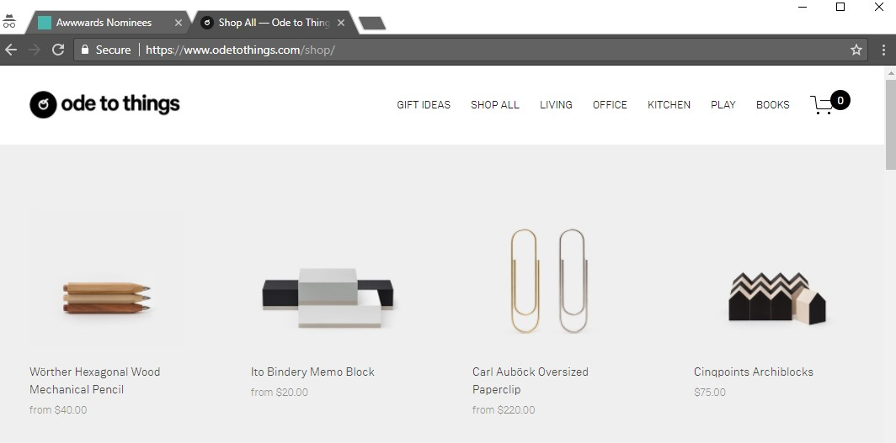
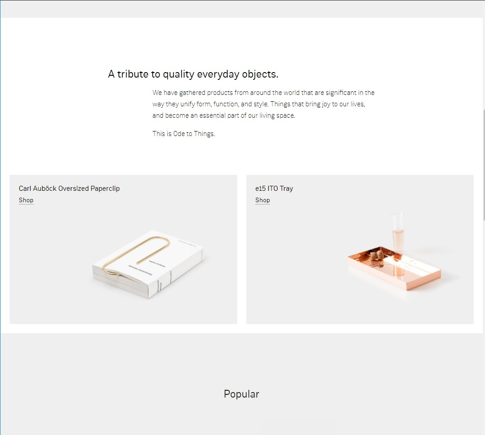
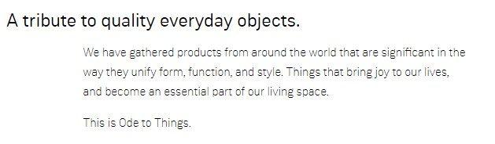
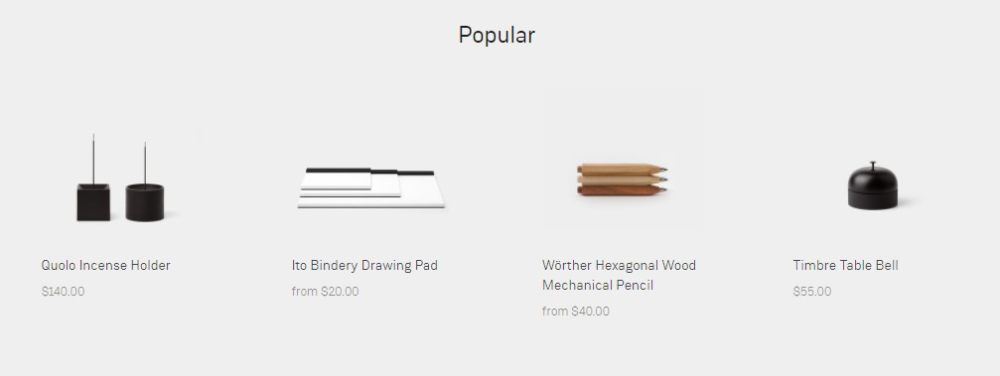

What are your first impressions of the design of the website? What do you like? What don't you like?
The simplicity and bare minimal design is what caught my attention. It avoids unnecessary flair. I don’t particularly enjoy the slight blur/shadow on the logo and title. Everything else is crisp so why not just go with everything looking sharp?
I like the very subtle and non-invasive ad that is nothing more than a narrow black bar spanning across the top of the site.
I like the overall uniformity in theme in that it follows the product photography’s tone.
Does the site work well on a mobile device? Is the site responsive to different screen sizes? What changes do you notice between mobile/desktop views?
Yes. The site scales well and is easily navigated on a mobile device. One key change is the flexing of the site’s images to display in a single column on a mobile device. Another key change is that of the main menu. On a desktop it is displayed as a nav bar across the top of the webpage and on mobile it gets reduced to a menu button that then displays all link options upon selecting it.
Examine the home page. How does the home page sell the site and engage users? What guidelines from page 609 in our book does the home page follow?
It keeps paragraphs concise, uses sans-serif fonts, uses white space appropriately, and doesn’t center or justify sentences. The header contains a logo and navigation bar with the logo returning the user to the homepage upon clicking. Many words and objects are clickable but key links are underlined. Clicking on the shopping cart takes you to your cart.
Explore the site navigation. Describe the site navigation. How does the site navigation change as you move through the pages? How does the site design tell you "where you are" in the organization of the site? Use screenshots to demonstrate the site navigation elements.
One thing the site does not do is highlight or emphasize what page you are currently on by adjusting the appearance of the link in the nav bar. It does, though, display the current page in the tab.
How does the site use web page space?
It uses all of the web page space to provide content in a clear manner. Nothing feels overwhelmingly big or obstructing.
Are longer pages dived into shorter chunks? Give some examples of chunking content into separate pages or content areas. Use a screenshot to demonstrate chunking.
Chunking is most visible in the home page where the viewer is introduced to a quick overview of what the site is about and its products.
What graphic design and typographical design elements do you see on your site. Give examples. Use screenshots where necessary. Refer to the list on pages 617.
The following screenshots demonstrates the use of proximity so the viewer understands the header and paragraph go together. The following screenshot demonstrates the clean and minimal design in displaying products and their prices in a uniform way.
Examine the writing of content on the website. Do you see large paragraphs of content or good examples of best writing for the web? Refer to the list of best tips on page 619.
There are no exceedingly long paragraphs. The longest paragraph I was able to find was on the home page with 54 words. Things are kept concise and to the point.
Rate the usability of the website from your experience. Would you purchase from this business? Why or why not?
I’d give this site a solid 9/10 and would purchase from them without a doubt. When a website becomes too cluttered the things they sell or present become tacky and I become wary in purchasing anything from them. When content is clear and presented well I’m inclined to purchase something because it suggests to me if they pay this much attention to their presentation then hopefully the same can be said about their products.
{kind=link}
{kind=link}
{kind=link}
{kind=link}